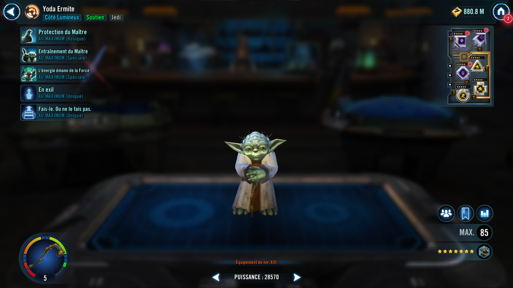
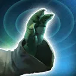
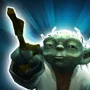

Hermit Yoda
Jedi recluse who imparts sage wisdom in the ways of the Force

Basic Attack: Master's Protection

All other allies recover 10% Health and 5% Protection. All other Jedi allies gain 5% Turn Meter.
Special Attack : Master's Training (cooldown: 3)

Yoda gains Stealth for 2 turns. Dispel all debuffs on target other ally and grant them the Master's Training unique buff until the end of the battle. Then, call all allies with Master's Training to Assist.
Master's Training: +25% (doubled on Jedi) Accuracy, Defense, Offense, Potency, and Tenacity. Can't be Dispelled or Prevented.
Special Attack : Strength Flows From the Force (cooldown: 4)
All allies have their current Health percentages equalized. (Health equalizing effects ignore Healing Immunity.) Then, all allies recover 20% Health and Protection and Jedi allies gain Foresight for 2 turns.
Unique Ability : In Exile

Yoda gains Stealth for 2 turns at the start of each encounter and has +100% Evasion while Stealthed. If there are no other allied combatants at the start of a turn, Yoda escapes from the battle.
Unique Ability : Do or Do Not
Whenever an ally with Master's Training is defeated, Yoda gains 100% Turn Meter and resets all of his cooldowns.